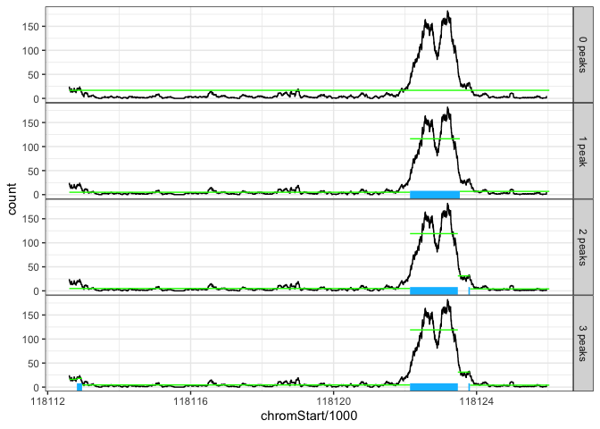

PeakSeg is a constrained maximum Poisson likelihood segmentation model. This is described in PeakSeg: constrained optimal segmentation and supervised penalty learning for peak detection in count data (source). We proposed a constrained Dynamic Programming Algorithm (cDPA) for computing a model that satisfies the PeakSeg constraints.
You can install the released version of PeakSegDP from CRAN with:
And the development version from GitHub with:
There are two main functions for computing the constrained segmentation model:
loss, ends, and mean (S x N matrices describing the solution).count, chromStart, chromEnd. It outputs a list of data.frames, peaks, error, segments, breaks.This is an example plotting the fitting of PeakSegDP():
library(PeakSegDP)
library(ggplot2)
data(chr11ChIPseq, envir=environment())
one <- subset(chr11ChIPseq$coverage, sample.id=="McGill0002")[10000:12000,]
fit <- PeakSegDP(one, 3L)
ggplot()+
geom_step(aes(chromStart/1e3, count), data=one)+
geom_segment(aes(chromStart/1e3, mean,
xend=chromEnd/1e3, yend=mean),
data=fit$segments, color="green")+
geom_segment(aes(chromStart/1e3, 0,
xend=chromEnd/1e3, yend=0),
data=subset(fit$segments, status=="peak"),
size=3, color="deepskyblue")+
theme_bw()+
theme(panel.spacing=grid::unit(0, "cm"))+
facet_grid(peaks ~ ., scales="free", labeller=function(df){
s <- ifelse(df$peaks==1, "", "s")
df$peaks <- paste0(df$peaks, " peak", s)
df
})